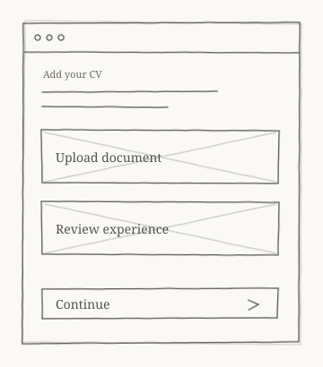
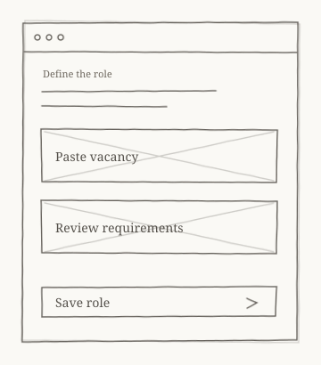
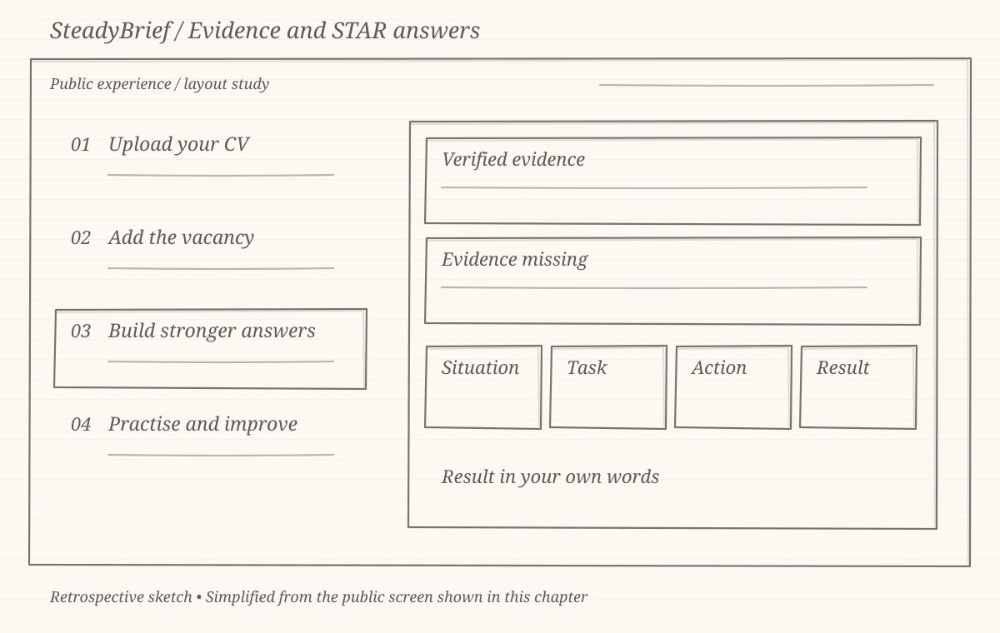

CASE STUDY 01 · INTERVIEW PREPARATION
SteadyBrief.
From CV to a clearer interview journey — structuring preparation around what a candidate already has.
The challenge
Interview preparation often starts from generic question lists, disconnected from the candidate’s real experience. SteadyBrief set out to do the opposite: structure the preparation experience around the candidate’s own CV and the vacancy they are targeting.
That idea brought real product questions. Candidates arrive with different documents, expectations and levels of confidence. The experience needed clear onboarding, understandable access journeys and an admin side that could support the product behind the scenes.
The approach
I started from the journeys rather than the screens. Before any interface direction, the core flows were defined and agreed: how a candidate adds their CV, how the vacancy shapes their preparation, how access and entitlements work, and what administrators need to manage it all.
- CV and vacancy journeys as the backbone of the experience
- Onboarding that explains the product while collecting what it needs
- Entitlements and access journeys that stay understandable
- Admin requirements defined alongside the candidate experience
My contribution
I led product definition for SteadyBrief: the CV and vacancy journeys, onboarding, entitlements and admin requirements. I directed the UX so each journey stayed clear and testable, then validated the result through UAT and release readiness checks before launch.
Focus: connecting product requirements to an experience that can be tested and refined.
RETROSPECTIVE JOURNEY SKETCHES
The journey, before the detail.
Pencil-style, low-fidelity illustrations created for this case study to explain the product journey. These are retrospective sketches, rather than original design-stage artefacts or live interface screenshots.

Start with the candidate’s own experience.

Keep vacancy context alongside the CV.

Connect preparation to both sources.
More from my portfolio
LET’S CONNECT
Have a product challenge?
I’m happy to discuss product management, UX/UI and digital delivery.
t02ft22@gmail.com